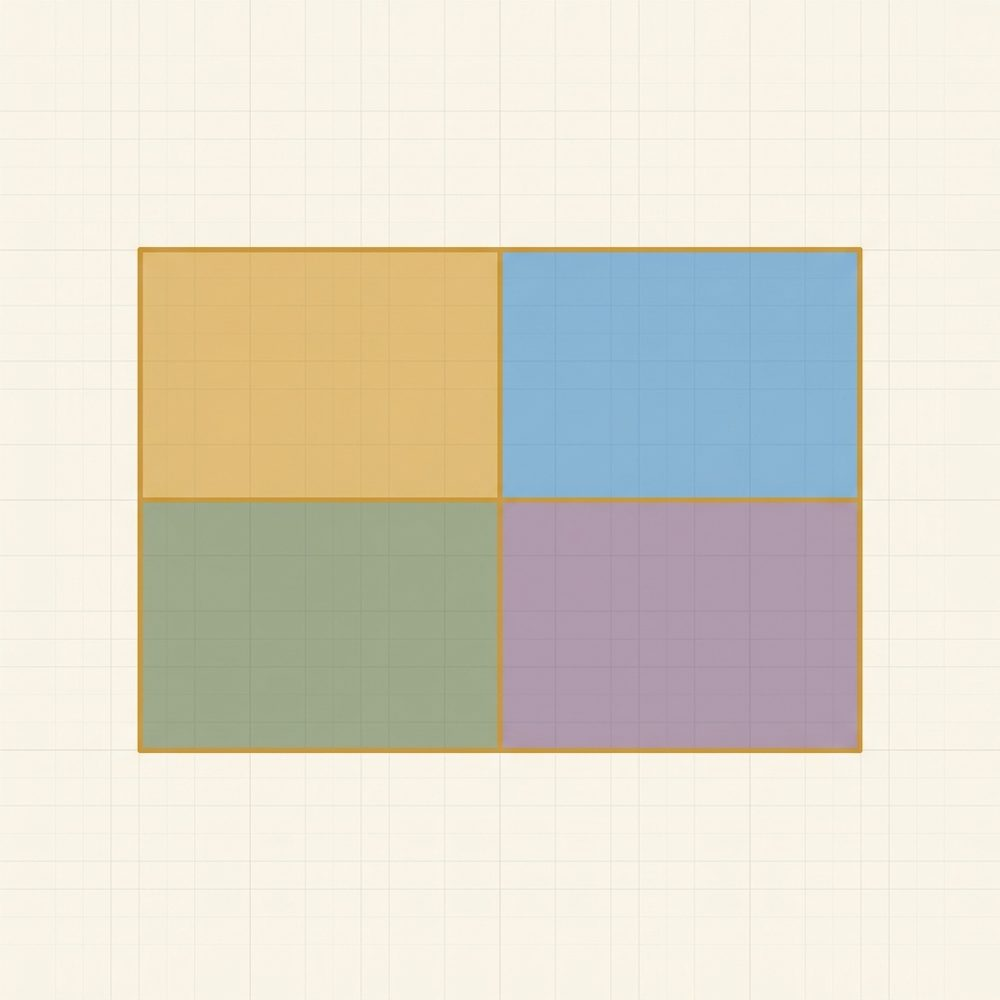

Exponents & Polynomials
Fresh, parallel-form problems with full worked solutions — more reps for the skills in this unit, kept separate from the textbook's own problems.

Read Unit 10 in the textbook →
Lesson 10.1: Exponent rules (including zero & negative exponents)
Simplify using the product rule: x⁵ · x⁴
Worked solutionTry it first, then open.
Multiplying like bases pools the factors, so the exponents ADD: x⁵ · x⁴ = x⁵⁺⁴ = x⁹. (Count if unsure: five x's times four x's is nine x's in a row — not x²⁰; you add, you don't multiply, the exponents here.)
Answer: x**9
Simplify using the quotient rule: y⁸ / y³
Worked solutionTry it first, then open.
Dividing like bases SUBTRACTS the exponents: y⁸ / y³ = y⁸⁻³ = y⁵. (Three of the eight y's on top pair off with the three on the bottom and go to one, leaving five y's.)
Answer: y**5
Simplify: (3a)³
Worked solutionTry it first, then open.
The exponent reaches EVERY factor inside the parentheses, the coefficient included: (3a)³ = 3³ · a³ = 27a³. Don't leave it as 3a³ — that would only cube the a. (Compare 3a³, where without parentheses the 3 is not under the exponent.)
Answer: 27*a**3
Simplify and write with a positive exponent: (2x⁴)(3x⁻⁶)
Worked solutionTry it first, then open.
Multiply the coefficients and add the exponents (the product rule, with a negative exponent as input): 2·3 = 6 and x⁴·x⁻⁶ = x⁴⁺⁽⁻⁶⁾ = x⁻². So the result is 6x⁻². A negative exponent means reciprocal, so x⁻² = 1/x², giving 6/x². (The exponent landed negative because 4 + (−6) = −2.)
Answer: 6/x**2
Lesson 10.2: Scientific notation
Convert to standard form (write the full number): 8.4 × 10³
Worked solutionTry it first, then open.
The exponent 3 says slide the decimal point 3 places to the right: 8.4 → 84. → 840. → 8400. So 8.4 × 10³ = 8400. (Check: 8.4 × 1000 = 8400.)
Answer: 8400
Convert to scientific notation: 0.00056
Worked solutionTry it first, then open.
Slide the decimal point right until exactly one nonzero digit sits in front of it: 0.00056 → 5.6, which is 4 places. The number is smaller than 1, so the power of ten is NEGATIVE: 0.00056 = 5.6 × 10⁻⁴. The coefficient 5.6 is in range (1 ≤ 5.6 < 10). (Check: 5.6 ÷ 10⁴ = 0.00056.)
Answer: 5.6*10**(-4)
Multiply, leaving your answer in scientific notation: (2 × 10⁵)(4 × 10³)
Worked solutionTry it first, then open.
Do the two jobs separately: multiply the coefficients (2 · 4 = 8) and ADD the exponents (the product rule on base 10: 10⁵ · 10³ = 10⁵⁺³ = 10⁸). So the answer is 8 × 10⁸. The coefficient 8 is already in [1, 10), so no renormalizing is needed. (As a full number: 800,000,000.)
Answer: 800000000
Multiply, then renormalize so the coefficient is at least 1 and under 10: (5 × 10⁴)(6 × 10⁷)
Worked solutionTry it first, then open.
Multiply the coefficients (5 · 6 = 30) and add the exponents (4 + 7 = 11): 30 × 10¹¹. Stop — 30 is not in [1, 10), so this is not yet scientific notation. Rewrite 30 as 3.0 × 10¹ and fold the extra power of ten in: 30 × 10¹¹ = 3.0 × 10¹ × 10¹¹ = 3 × 10¹². The decimal slid one place left (30 → 3.0), so the exponent went UP by 1 (11 → 12). (Check: 30 × 10¹¹ = 3,000,000,000,000 = 3 × 10¹².)
Answer: 3*10**12
Lesson 10.3: Polynomials — terms, degree, standard form; add & subtract
Name the type (monomial / binomial / trinomial), the degree, and the leading coefficient of: 2x⁴ − x + 6
Worked solutionTry it first, then open.
Three terms (2x⁴, −x, +6) → trinomial. The highest power is 4 → degree 4. Once written in standard form (it already is — descending powers), the coefficient riding the highest-degree term is 2 → leading coefficient 2. (The constant 6 is the degree-0 term, read as 6x⁰, which is why it sits last.)
Answer: trinomial; degree 4; leading coefficient 2
Write in standard form: 3 − 2x + 4x³
Worked solutionTry it first, then open.
Standard form means descending order of degree (highest power first). Reorder: 4x³ (degree 3), then −2x (degree 1), then the constant 3 (degree 0). Result: 4x³ − 2x + 3. There is no x² term, so none is written. The leading coefficient is 4.
Answer: 4*x**3-2*x+3
Add: (4x² + x − 3) + (2x² − 5x + 1)
Worked solutionTry it first, then open.
Combine like terms by matching variable AND power. x²-terms: 4x² + 2x² = 6x². x-terms: x + (−5x) = −4x. Constants: −3 + 1 = −2. Stacked by degree: 6x² − 4x − 2.
Answer: 6*x**2-4*x-2
Subtract: (3x² − 2x + 5) − (x² − 4x − 3)
Worked solutionTry it first, then open.
Subtracting a whole polynomial means a −1 shakes hands with EVERY term in the second parentheses, so every sign flips: −(x² − 4x − 3) = −x² + 4x + 3. Now combine: (3x² − x²) + (−2x + 4x) + (5 + 3) = 2x² + 2x + 8. Note the −4x became +4x and the −3 became +3. Check at x = 1: original (3 − 2 + 5) − (1 − 4 − 3) = 6 − (−6) = 12; result 2 + 2 + 8 = 12.
Answer: 2*x**2+2*x+8
Lesson 10.4: Multiplying polynomials
Multiply (distribute): 2x(x + 6)
Worked solutionTry it first, then open.
The outside factor 2x hands a copy to everyone inside: 2x · x + 2x · 6. By the product rule, x · x = x², so 2x · x = 2x²; and 2x · 6 = 12x. Result: 2x² + 12x.
Answer: 2*x**2+12*x
Multiply with the area box: (x + 4)(x + 2)
Worked solutionTry it first, then open.
Four cells: x·x = x², x·2 = 2x, 4·x = 4x, 4·2 = 8. Collect the two MIDDLE cells: 2x + 4x = 6x. So (x + 4)(x + 2) = x² + 6x + 8. The middle term is the part people drop — it is the sum of the two cross-products.
Answer: x**2+6*x+8
Multiply, watching the signs: (x − 5)(x + 3)
Worked solutionTry it first, then open.
Fill each cell with its SIGNED product: x·x = x², x·3 = 3x, (−5)·x = −5x, (−5)·3 = −15. Middle term: 3x + (−5x) = −2x. So (x − 5)(x + 3) = x² − 2x − 15. Check at x = 1: (−4)(4) = −16, and 1 − 2 − 15 = −16.
Answer: x**2-2*x-15
Multiply: (2x − 3)(3x + 4)
Worked solutionTry it first, then open.
Four signed products: 2x·3x = 6x² (coefficients multiply, x·x = x²), 2x·4 = 8x, (−3)·3x = −9x, (−3)·4 = −12. Middle term: 8x + (−9x) = −x. So (2x − 3)(3x + 4) = 6x² − x − 12. Check at x = 1: (−1)(7) = −7, and 6 − 1 − 12 = −7.
Answer: 6*x**2-x-12
Mixed review
Problems that mix skills from across the unit — good for spacing earlier work back in.
Simplify: (2x²)(5x³)
Worked solutionTry it first, then open.
Multiply the coefficients (2 · 5 = 10) and add the exponents (product rule: x² · x³ = x²⁺³ = x⁵). Result: 10x⁵. Watch the trap — the exponents ADD to 5, they do not multiply to 6.
Answer: 10*x**5
Divide, leaving your answer in scientific notation: (8 × 10⁷) / (4 × 10³)
Worked solutionTry it first, then open.
Divide the coefficients (8 ÷ 4 = 2) and SUBTRACT the exponents (quotient rule on base 10: 10⁷ / 10³ = 10⁷⁻³ = 10⁴). So the answer is 2 × 10⁴. The coefficient 2 is in [1, 10), so no renormalizing is needed. (As a full number: 20,000.)
Answer: 20000
Subtract: (5x² + 2x − 1) − (3x² + 2x − 6)
Worked solutionTry it first, then open.
Distribute the negative to every term in the second parentheses: −(3x² + 2x − 6) = −3x² − 2x + 6. Combine: (5x² − 3x²) + (2x − 2x) + (−1 + 6) = 2x² + 0x + 5 = 2x² + 5. The x-terms cancel to zero. Check at x = 1: (5 + 2 − 1) − (3 + 2 − 6) = 6 − (−1) = 7, and 2 + 5 = 7.
Answer: 2*x**2+5
Expand: (x + 5)²
Worked solutionTry it first, then open.
Squaring a binomial is NOT squaring each term — there is a doubled middle term. Write it out: (x + 5)(x + 5) = x² + 5x + 5x + 25 = x² + 10x + 25. The middle 10x (that's 2 · 5x) is the whole point; (x + 5)² ≠ x² + 25. Check at x = 1: (6)² = 36, and 1 + 10 + 25 = 36.
Answer: x**2+10*x+25
Expand: (2x + 1)(2x − 1)
Worked solutionTry it first, then open.
This is a difference-of-squares pattern (a + b)(a − b) = a² − b², with a = 2x and b = 1. The four cells: 2x·2x = 4x², 2x·(−1) = −2x, 1·2x = +2x, 1·(−1) = −1. The middle terms −2x and +2x cancel, leaving 4x² − 1. (Note (2x)² = 4x² — the exponent reaches the coefficient 2.) This is exactly the kind of product Unit 11 will run backward to factor. Check at x = 1: (3)(1) = 3, and 4 − 1 = 3.
Answer: 4*x**2-1